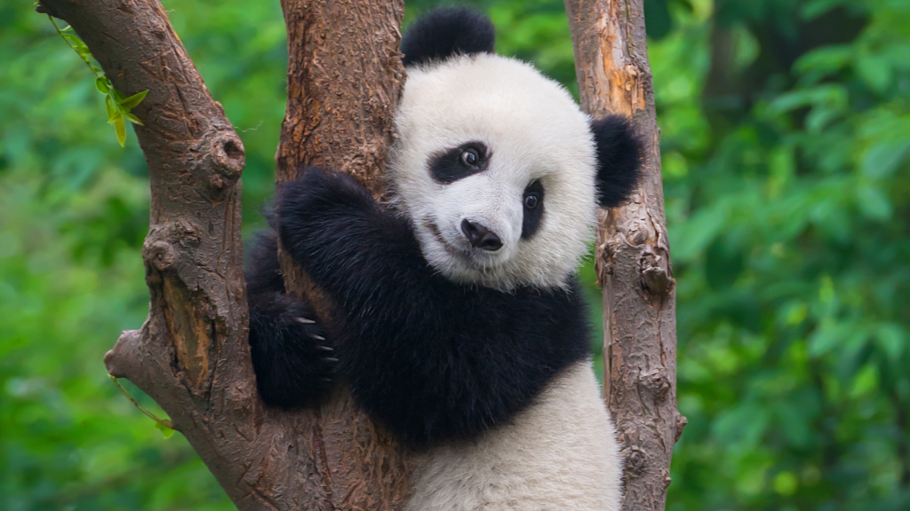

Top 5 Countries I Want To Travel To
- Japan
- Korea
- France
- United Kingdom
- China

I put Japan at number 1 because I've always wanted to go there ever since I was a young child and sometime next year I might finally make this dream come true. And, I thought that it would be a very nice place to go to with some friends for the first time to explore the nice cuisines. Some locations in Japan that I'd like to visit would be Mount Fuji, Osaka, Kyoto, Tokyo, Shibuya, Hokkaido, Fushimi Inari Taisha, Fukuoka, Toyko tower, and the Arashiyama Bamboo Forest.
For number 2, I have Korea since I would want to visit the provinces there, N Seoul Tower, Seoul, Lotte World, Jeju Island, Busan, Starfield Library, Changgyeonggung Palace, Gyeongju, Incheon, and I want to just have a nice experience there with some friends.
I chose France, as I'd like to visit Paris, and the Eiffel Tower, Arc de Triomphe, Verdon Gorge and other touristic locations there in France, but most importantly I want to also try french cuisine.

The United Kingdom is a place that I'd like to visit as I've seen a lot of old archictecture from the UK, that I would love to see in person such as the Cathedrals, the Castles, the famous Fracis Scott Key Bridge that sadly got removed earlier this year, and the Tower Bridge.

For China, theres a few places that I have in mind such as the stairway
to heaven which is also known as Tianmen Mountain
, a few others would be to go to
Hong Kong, the Dragons's Back, Guangdong, Beijing, Shanghai, and Chengdu since some friends told me
great things about those locations.
Top 5 Favorite Foods
- Pizza
- Spaghetti
- Sushi
- Burgers
- Dim Sum

Pizza is one of my favorite foods, since I like the way its very cheesy and there's also different kinds of pizza in which we can choose from.

Spaghetti since I love the way my mom made it as a kid, and it was always a food that I thought was quite delicious.

For sushi, there's different types of sushi rolls, and I've always liked to try different kinds of Sushi rolls with my friends, and it's also a really nice meal to have.

Burgers are one of my favorites because I love how there's many fast food locations that sell them, and it's a food that we see quite a lot too. And one my favorite burger location's has to be In N Out, since they make their burgers really good.

Many of the times that me and my friends go out, we usually go to some very nice restaurants that serve Dim sum, and because of it I also began to love it a lot, not only that, but I also ate it a lot as I grew up.
Top 5 of my Favorite Animals
- Panda
- - Chubby, likes to sleep, eats bamboo and adorable
- Rabbit
- - White, fluffy, jumps a lot and eat carrots
- Cheetah
- - Fast, lots of spots, and is a rare animal
- Flamingo
- - Pink, stand on one leg, can fly, sleep standing up, and smell
- Penguin
- - Slide on stomach, live in the cold, waddle, and eat fish

I decided to choose this as one of my animals, as I've always loved Panda's growing up and thought it was a really cute animal. Not only that, but I also have a panda plushie that was given to me and I always found that it made me feel much happier, so panda's are the animal's that bring me joy and are my favorite because of that.

When I was a kid I always wanted to have a pet bunny/rabbit, but I was never able to have one
because my parents would say that it was a pet that smelled
a lot. Besides not being able to
have one as a pet, I thought bunnies were really adorable by the way they acted and moved around in their day.
As I choose this animal I remembered the times in grade-school when we first learned about cheetah's and I thought they were really cool since they would run really fast, and it would be one of the quickest animals in the world. And I simply found that amazing to learn about, since I would love to run that quickly myself.

For this animal I would that it is one of my favorites because it's one of the most memorable animals whenever I would go on field-trips to the zoo's with my family or from grade-school. And they are also really interesting creatures since they have very tiny legs and are able to maintain their balance super well.

The penguin is one of my favorite animals because I loved watching the movie Happy Feet. And I always found penguins to be such cute animals, that live in big families in the cold and I also like how they waddle around.